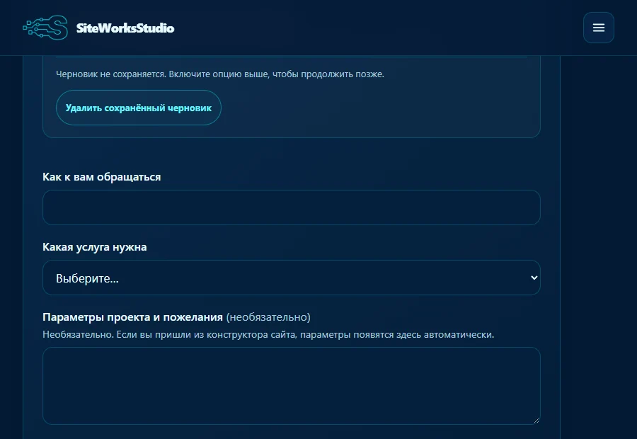
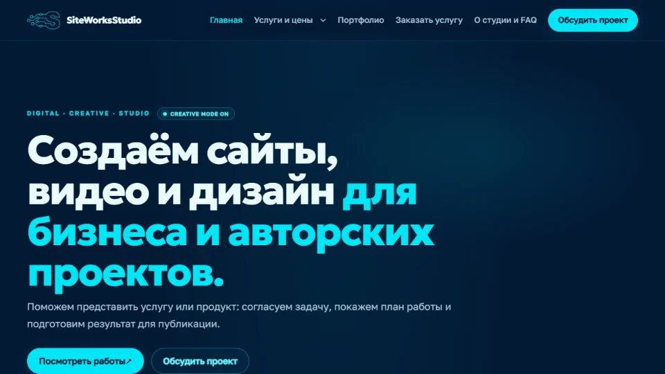
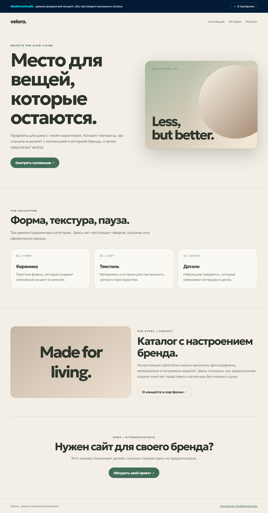
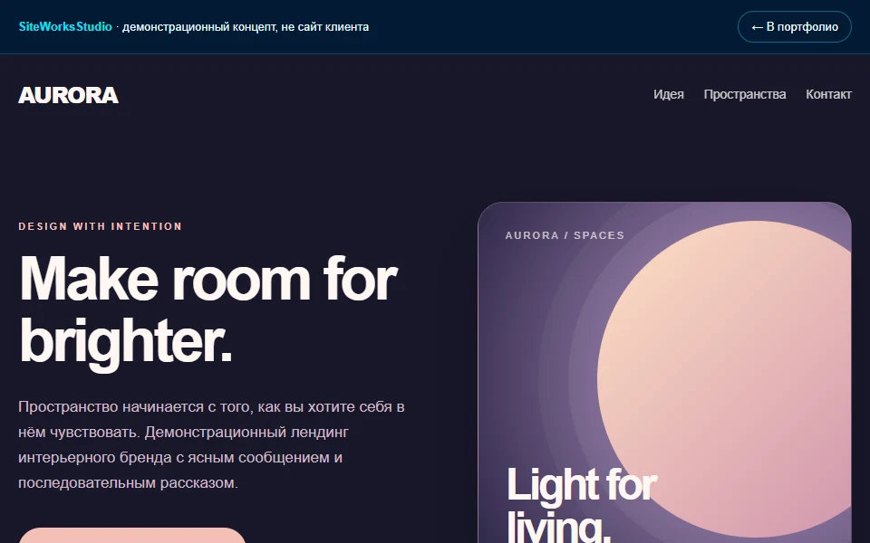

Внутренний продукт
SiteWorksStudio OS
Рабочая платформа студии для проектов, задач, заказов и команды. Интерфейс авторизованного приложения.
ReactTypeScriptSupabase
О проекте Сайты и продукты студии. Ниже — демо интерфейсов, графики и сценариев.
Рабочая платформа студии для проектов, задач, заказов и команды. Интерфейс авторизованного приложения.
Сайт с обучающими материалами и каталогом видео. Отдельный опубликованный проект.

Показываем, как устроен удобный путь от обращения на сайте до ответа клиенту.
Показано 7 работ

Собственный многостраничный сайт с описанием услуг, ценами, портфолио и брифом. Заявки принимаются на сайте, приходят в Telegram и сохраняются в CRM.
Структура услуг и цен, демонстрационное портфолио, форма брифа, Telegram-уведомления и сохранение заявок в CRM. Это внутренний проект студии; клиентские показатели и результаты продаж не заявляются.

Концепт корпоративного сайта для технологического бизнеса: ясная структура, сильный первый экран и путь к заявке.
Позиционирование и оффер, блоки возможностей, доверительные элементы, адаптивная сетка и заметный призыв к действию.

Демонстрационная витрина коллекции с акцентом на продукт, спокойную палитру и редакционную подачу.
Визуальная иерархия каталога, карточки товаров, выделение коллекций, понятная навигация и мобильный сценарий просмотра. Функциональная оплата в концепт не входит.

Одностраничный концепт бренда интерьера: настроение, продукт и последовательное раскрытие ценности.
Короткая история бренда, преимущества, визуальные акценты, этапы знакомства с продуктом и отдельный CTA-блок для обращения.
Визуальное направление для короткого энергичного ролика с быстрым ритмом и крупной типографикой.
Примерная последовательность кадров, акцентные надписи, темп монтажа и вертикальная композиция 9:16. Это визуальный концепт, а не готовый видеоролик.
Концепт визуального стиля бренда: знак, типографика, палитра и единый характер носителей.
Сочетание нейтральных тонов, типографическая иерархия, палитра и базовые правила применения стиля в цифровых материалах.
Проект структуры слайдов: обложка, свойства товара и характеристики.
Контраст заголовков, последовательность смысловых блоков, палитра товара, информационная карточка и общий шаблон для всей линейки.
Часть визуальных работ хранится в отдельном digital-портфолио: обложки YouTube, графика и концепции кадров для Reels/Shorts. Короткие видео там показаны как визуальные идеи, а не как опубликованные ролики.

Редакционная обложка с крупным вопросом и контрастной композицией.

Футуристичная композиция для темы технологий и перемен.
Финансовый сюжет с направленным движением и сильным заголовком.
YOUR PROJECT STARTS HERE
Опишите задачу — подберём формат, определим объём и согласуем условия до начала работы.